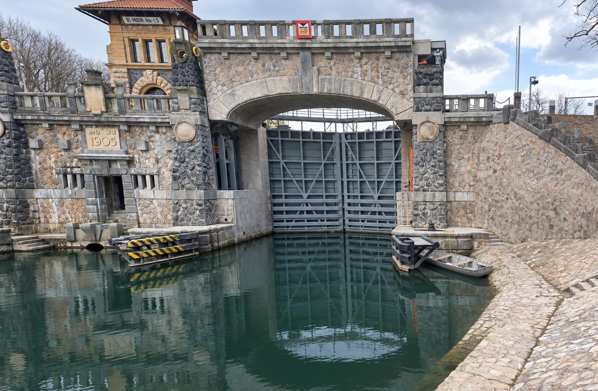

Kámen, který drží stavby.
Dlažby, schodiště, obklady, fasády, opěrné a nábřežní zdi a repase kamenných prvků — pro metro, železnici, vodní díla i historické budovy.
Stavby 2026 → 2007
Stavby, na kterých jsme prováděli kamenické práce — od nejnovějších po první zakázky firmy.
Kamenické práce na stavbách od roku 2007
DOLIUM s.r.o. dodává a montuje kamenné prvky pro stavby dopravní infrastruktury, vodní díla i budovy. Pracujeme s žulou, mramorem, travertinem, pískovcem i lomovým kamenem. Opravujeme a restaurujeme také historické kamenné konstrukce.
- Kamenné dlažby a obklady
- Kamenná schodiště
- Kamenné fasády
- Opěrné a nábřežní zdi
- Obklady mostních pilířů
- Komunikace a chodníky z kamene
- Architektonické kamenné prvky
- Repase a restaurování
Absolvent Fakulty stavební ČVUT, obor geotechnika a tunely. Devatenáct let ve společnosti Metrostav, od roku 1994 se věnuje kamenickým stavbám. Je členem Svazu kameníků a kamenosochařů ČR. Před založením firmy se podílel mimo jiné na stavbách Burzy cenných papírů, Archivu hl. m. Prahy, stanic metra Náměstí Míru, Kolbenova a Černý Most a Lahovického mostu.